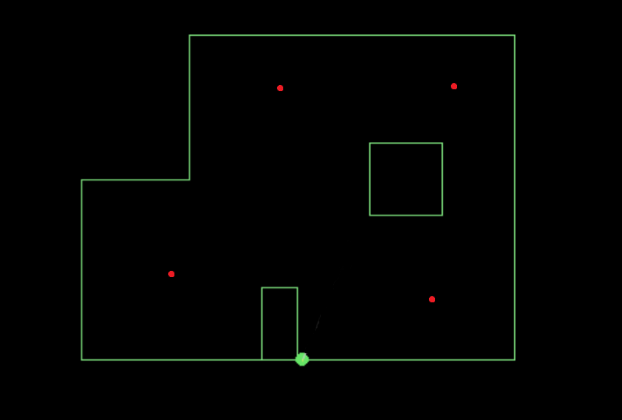

The purpose of this lab is to use a fully functional Bayes filter to localize the robot within the maze.
Setup
The only setup for this lab is to download files needed to implement the filter.
Lab Sections
Part 1:
For this lab, we are given four locations in the maze to place the robot. The robot is to be places in each location and must determine where it is at. The 4 locations can be seen by the red dots below.

The main portion of code in python that must be written is the obersvation loop step. This code is written under the function perform_observation_loop(self, rot_vel=120). The code here is short, all that needs
to be done is to normalize the read sensor data, then transpose said data.
sensor_ranges = [x / 1000 for x in val_arr]
sensor_ranges = np.array(sensor_ranges)[np.newaxis].T
The arduino side of the code that had to be written is more complex. I did my previous mapping by continuously spinning. Here, I had to switch over to doing 20 degree turns. This was an issue for me
as my robot is very bad at moving at slow speeds. However, I was able to get my robot to do 20 degree turns relatively well through PID. It just has to do each turn very quickly to work.
VIDEO
To get the robot to spin, I used a for loop that iterates 18 times. for each iteration, the robot does one PID controlled 20 degree rotation. Only the P was used in PID.
The most helpful part of the rotations was using the filtered gyro to control the PID. The total_deg variable accumulates to 20 degrees. The while loop is then broken and total_deg is reset back to zero.
My localization worked very well. Below are the locations it recorded being at, with a red dot to indicated the actual location.
In a few instances, no red dot is shown. This is because the robot read that it was in the correct spot. location 5,3 is a little bit below where it should be. This location was the most difficult to get reasonably accurate,
and often seemed to think it was at 0,3. I believe this is due to the locations looking almost like mirror images of each other. I was eventually able to consistently recognize it was in that corner, but the accuracy was never good.
I'm not sure why that is, but it may have to do with that corner having the most obstacles near it.
The top left is also off a bit and was also often read as being in the top right instead. It's hard to say why exactly it's off, but it may be due to the drift of the robot as it rotates.